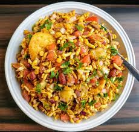

Bhel

Bhel puri is a popular Indian savory snack made with puffed rice, tossed with vegetables and tangy chutneys.
- The vegetables used in preparation of bhel puri may vary in different regions, but it most commonly consists of boiled potatoes, diced onions, and tomatoes. Some people also like to add diced cucumber and sprouts.
- The mixture is then spiced with salt, chillies and chaat masala.
- follow the steps
Return to main page